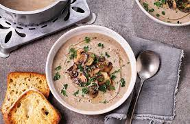

Mushroom Soup

Ingrediants
- 90g Butter
- 2 Onions
- 1 Garlic Glove
- 500g Mushrooms
- 2 tbsp plain flour
- 4 tbsp single cream
- Chick stock
Equipment
- Saucepan
- Blender / hand blender
Steps to prepare
- Chop up the garlic and onion.
- Heat up the butter on a saucepan and coik the onions and garlic until soft and not brown.
- Add muushrooms into the saucepan and cook over a high heat for 3 minitues untill soft.
- Add 2 tbsp of flour into the saucepan and mix well with the mushrooms
- Add chicken stock into the saucepan stir well and let simmer for 10 minutes.
- pour the saucepan into a blender and blend untill th mixture is smooth.
- Reheat the mixture and add creame.
Recipes
Home Page